Assistência Técnica
Suporte especializado no campo, acompanhamento da lavoura.
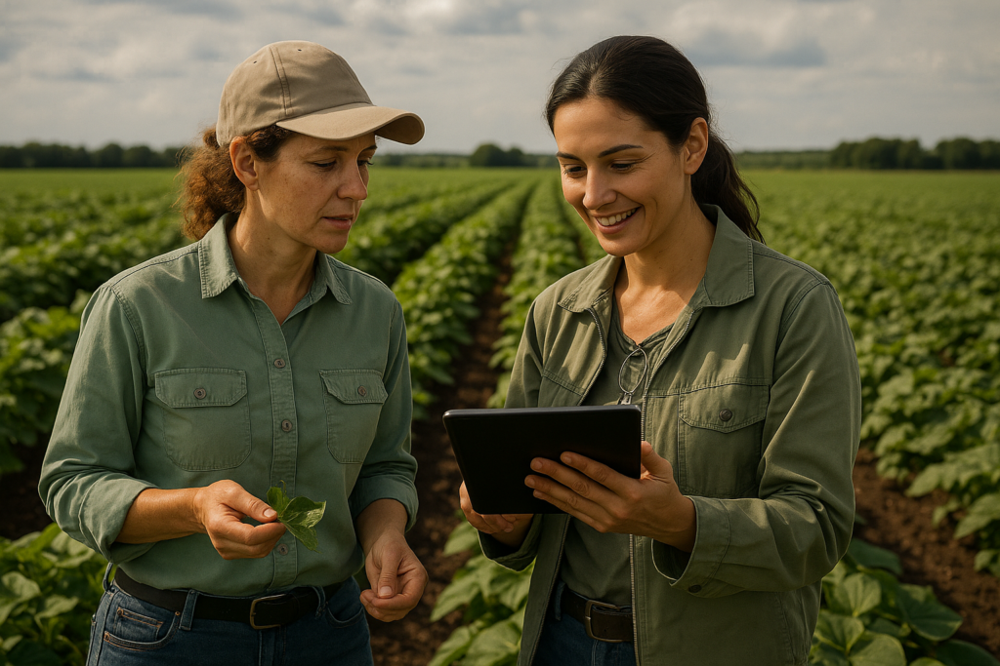

Com 30 anos de experiência no mercado, somos uma empresa do agronegócio construída sobre credibilidade, relacionamento e resultados. Ao longo de três décadas, acompanhamos a evolução do campo, enfrentamos diferentes cenários e acumulamos conhecimento prático para atender o produtor rural com segurança e eficiência.
Atuamos na revenda de insumos agrícolas — sementes, fertilizantes e defensivos — e na comercialização de calcário, sempre com foco em assistência técnica qualificada e prestação de serviços. Acreditamos que o verdadeiro valor está em estar presente no dia a dia do produtor, orientando, planejando e apoiando decisões que impactam diretamente a produtividade e a rentabilidade da lavoura.
Nossa trajetória também é marcada por relacionamentos de longa data com os mesmos fornecedores, o que garante acesso a produtos de qualidade, confiabilidade nas entregas e consistência técnica ao longo do tempo. Essas parcerias sólidas refletem nosso compromisso com ética, transparência e responsabilidade em toda a cadeia.
Mais do que vender produtos, construímos parcerias duradouras, baseadas em confiança, proximidade e compromisso com o sucesso de quem produz. Seguimos trabalhando para oferecer soluções completas, cuidar do solo e das lavouras e contribuir para um agronegócio cada vez mais forte e sustentável.
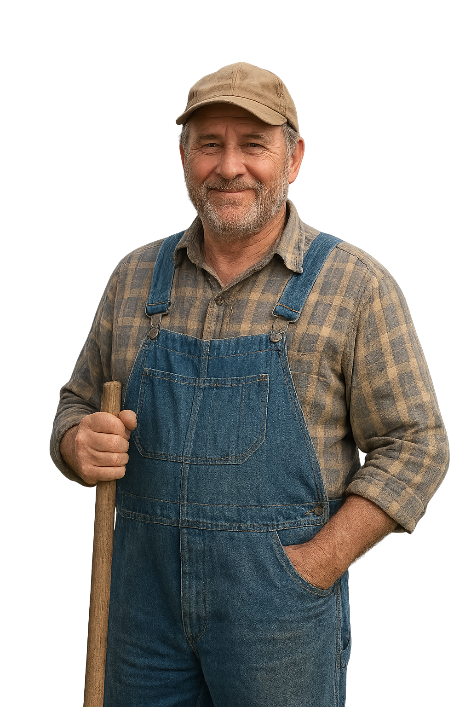
Suporte especializado no campo, acompanhamento da lavoura.

Processamento e tratamento de sementes e grãos, garantindo qualidade e produtividade.
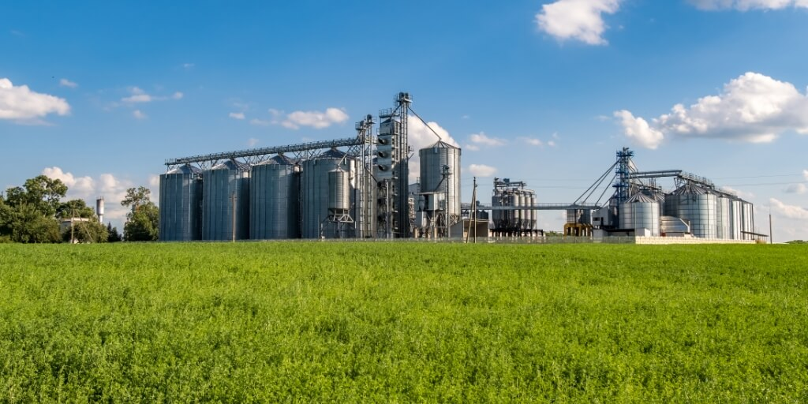
Serviço completo de colheita mecanizada e transporte seguro até o destino final.
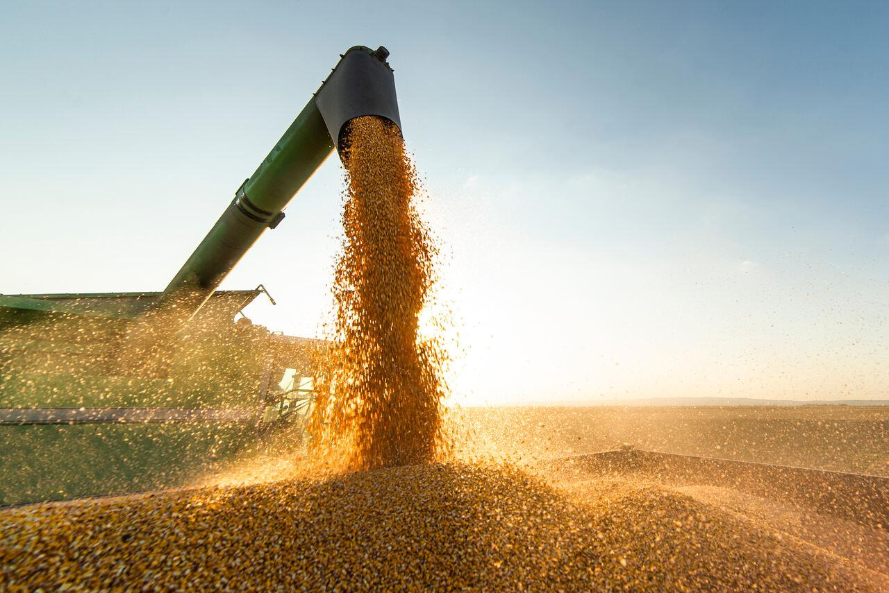
Aplicação profissional de defensivos, garantindo proteção eficiente das culturas.
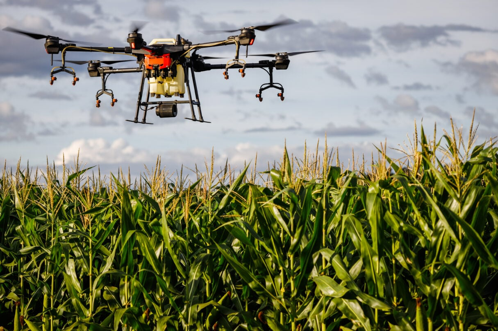
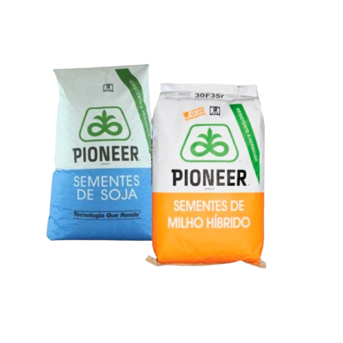
Nossas sementes são selecionadas com rigor para oferecer alta taxa de germinação, desenvolvimento uniforme e plantas mais fortes desde o início. Produzidas por fornecedores certificados, garantem excelente desempenho no campo, maior resistência e produtividade superior na colheita. Ideal para produtores que buscam resultado, segurança e rendimento em cada safra.
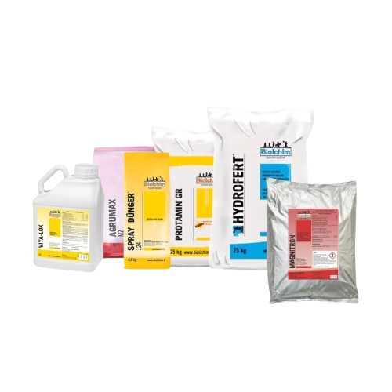
Os adubos foliares oferecem absorção imediata dos nutrientes, garantindo resposta rápida no crescimento, vigor e produtividade das culturas. Formulados com macro e micronutrientes essenciais, eles corrigem deficiências de forma prática e aumentam o desempenho das plantas mesmo em condições de estresse. Indicado para hortaliças, frutíferas, pastagens e lavouras em geral, proporcionando melhor desenvolvimento, mais resistência e maior rendimento.

Os adubos granulados oferecem nutrição equilibrada e de longa duração, garantindo melhor desenvolvimento radicular, crescimento uniforme e maior produtividade. Sua liberação gradual permite que a planta absorva os nutrientes no momento certo, reduzindo perdas e aumentando a eficiência da adubação. Indicados para lavouras, pastagens, hortas e jardins, proporcionam solos mais férteis, plantas mais fortes e resultados consistentes em todas as etapas do cultivo.

Os produtos biológicos são formulados com microrganismos benéficos que atuam no controle de pragas e doenças, além de melhorar a saúde do solo e o desenvolvimento das plantas. São soluções sustentáveis que reduzem o uso de defensivos químicos, mantendo a produtividade e preservando o meio ambiente. Indicados para diversas culturas, os biológicos promovem maior equilíbrio no cultivo, plantas mais resistentes, solo mais fértil e resultados duradouros, contribuindo para um manejo agrícola moderno e responsável.
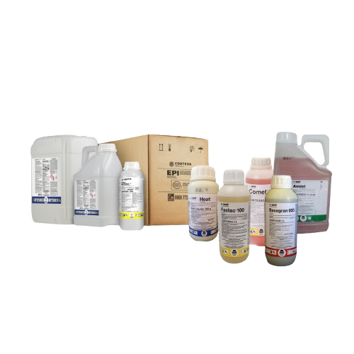
Os defensivos agrícolas garantem a proteção eficaz das lavouras contra pragas, doenças e plantas daninhas, assegurando o desenvolvimento saudável das culturas. Com fórmulas modernas e de alta performance, proporcionam controle rápido, segurança no manejo e maior retorno produtivo. Indicados para todas as etapas do cultivo, ajudam o produtor a manter a lavoura protegida, uniforme e altamente produtiva, mesmo em condições desafiadoras.
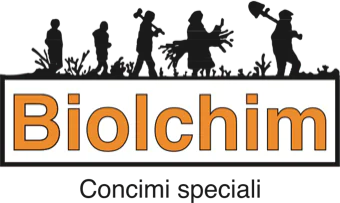
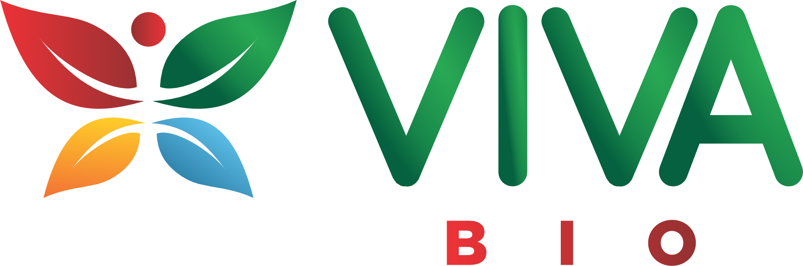
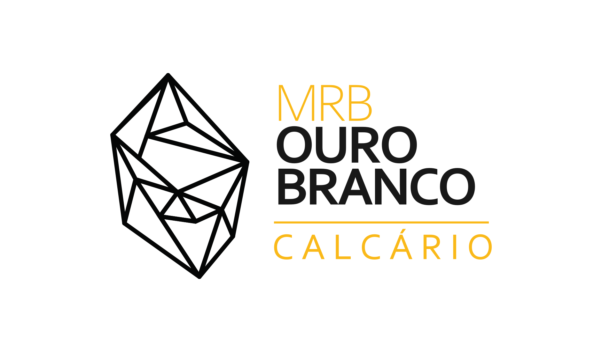
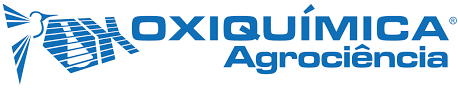
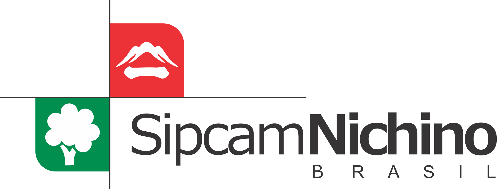
Av. Gov. Bias Fortes, 1326 - Pontilhão, Barbacena - MG, 36204-168
HORÁRIO DE ATENDIMENTO
Segunda a sexta: 8h às 18h
Sábado: 8h às 12h
 (32) 98401-9742
(32) 98401-9742